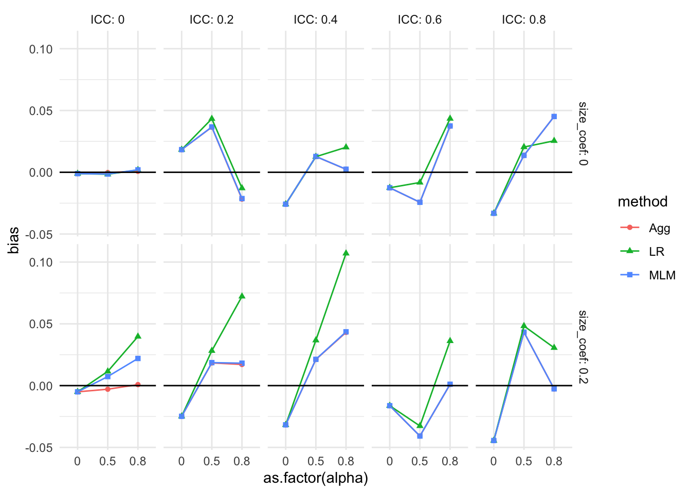
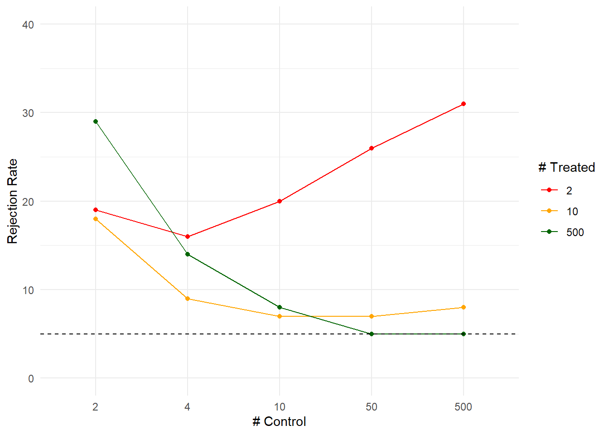
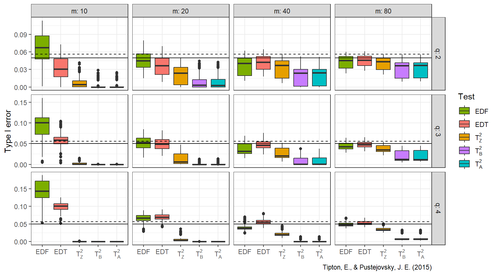

Chapter 13 Building good vizualizations
Visualization should nearly always be the first step in analyzing simulation results. In the prior chapter, we saw a series of visualizations that showed overall trends across a variety of examples. Those visualizations are not the initial ones that were created for those research projects. In practice, making a visualization often requires creating a bunch of graphs to look at different aspects of the data. From that pile of graphs, you would then refine ones that communicate the overall results most cleanly, and include those in your main write-up. In our work, we find we often generate a series of R Markdown reports that load the simulation results and generate collections visualizations targeting our various research questions. These initial documents are then discussed internally by the research team.
In this chapter we dive into how to create visualizations, and discuss a set of common tools that we use to explore our simulation results. In particular, we focus on four essential tools:
- Subsetting: Multifactor simulations can be complex and confusing. Sometimes it is easier to first explore a subset of the simulation results, such as a single factor level.
- Many small multiples: plotting all of the results in a single plot, with facets to break up the results by simulation factors.
- Bundling: grouping the results by a primary factor of interest, and then plotting the performance measure as a boxplot so you can see how much variation there is within that factor level.
- Aggregation: averaging the performance measure across some of the simulation factors, so you can see overall trends.
We next walk through these techniques using our running example of comparing methods for analyzing a Cluster RCT. We will start with an investigation of bias.
As a reminder, in our Cluster RCT example, we have three methods for estimating the average treatment effect: linear regression of the student-level outcome onto treatment (with cluster-robust standard errors); aggregation, where we regress the cluster-level average outcome onto treatment (with heteroskedastic robust standard errors); and multilevel modeling with random effects.
We want to know if these methods are biased for our defined estimand, which is the cluster-average effect.
We have five simulation factors: school size (n_bar), number of schools (J), the intraclass correlation (ICC), the degree of variation in school size (alpha), and the relationship between school size and treatment effect (size_coef).
13.1 Subsetting and Many Small Multiples
As an initial exploration, you can simply filter the simulation results to a single factor level for some nuisance parameter. Generally, with small multiples, it is relatively straightforward to look at three simulation factors. This is because, with a facet grid, you can plot five things easily: two for the facets, one for the x-axis, one for color/line type, and one for the y-axis. We usually use two of these for method and outcome, giving three factors to explore.
For example, for our simulation, we might examine an ICC of 0.20 only, taking it as a “reasonable” value that, given our substance matter knowledge, we know is frequently found in empirical data.
We migth further pick \(n_bar = 80\) so we do not have to worry about it too much.
This leaves three factors, allowing us to plot all of our simulation results.
We the bias as a function of J, with different lines for the different methods, and facets for the different levels of size_coef and alpha.
sres_sub <- sres %>%
filter( ICC == 0.20, n_bar == 80 )
ggplot( sres_sub, aes( as.factor(J), bias,
col=method, pch=method, group=method ) ) +
facet_grid( size_coef ~ alpha, labeller = label_both ) +
geom_point() + geom_line() +
geom_hline( yintercept = 0 ) +
theme_minimal() 
Each point is one of our methods in one of our simulation scenarios. We are looking at the raw results. We connect the points with lines to help us see trends within each of the small multiples. The lines help us visually track which group of points goes with which.
We immediately see that when there is a lot of site variation, and it relates to outcome, linear regression is very different from the other two methods. When there is no variation, or it does not relate to impact, nothing is particularly biased.
Subsetting is a very useful tool, especially when the scope of the simulation feels overwhelming. It can also be used as a quick validity check, we can subset to a known context where we know nothing exciting should be happening, and then check that indeed nothing is there. For example, in our context we might subset to the scenarios with no variation in site size or relationship between size and outcome:
So, for our null check, we have three factors and can plot the them all:
ggplot( sres_null, aes( ICC, bias,
col=method, pch=method, group=method ) ) +
facet_grid( J ~ n_bar, labeller = label_both ) +
geom_point() + geom_line() +
geom_hline( yintercept = 0 ) +
theme_minimal()
As predicted, nothing is happening.
Interestingly, we see that all methods are identical when there is no site variation, regardless of ICC, J, or n_bar.
Subsetting allows for a deep dive into a specific context. It also can make it easier to think through what is happening in a complex context. Sometimes we might even just report a subset in our final analysis. In this case, we would consider the other levels as a “sensitivity” analysis vaguely alluded to in our main report and placed elsewhere, such as an online supplemental appendix.
It would be our job, in this case, to verify that our reported findings on the main results indeed were echoed in our other, set-aside, simulation runs. In our case, as we see below, we will see little effect of the ICC on how one model performs relative to another; we thus might be able to safely ignore the ICC factor in our main report.
But if you do want to look at all your simulation results at once, you need to somehow aggregate your results to make them all fit on the plot. We next present bundling, a way of using the core idea of small multiples for showing all of the raw results, but which does so in a semi-aggregated way.
13.2 Bundling
When faced with many simulation factors, we can bundle bundle the simulations into groups defined by a selected primary factor of interest, and then plot each bundle with a boxplot of a selected performance criteria. Each boxplot then shows the central measure of how well an estimator worked across those scenarios, along with a sense of how much that performance varied across those simulations. If the boxes are narrow, then we know that the variation across simulations within the box did not impact performance much. If the boxes are wide, then we know that the factors that vary within the box matter a lot for performance.
With bundling, we generally need a good number of simulation runs per scenario, so that the MCSE in the performance measures does not make our boxplots look substantially more variable (wider) than the truth. (Consider a case where the simulations within a box all would have the same performance, but the MCSE is large; in this case we would see a wide boxplot when we should not.)
To illustrate, group our Cluster RCT results by method, ICC, the size coefficient (how strong the cluster size to treatment impact relationship is), and alpha (how much the cluster sizes vary). For a specific ICC, size, and alpha, we will put the boxes for the three methods side-by-side to directly compare the methods:
ggplot( sres, aes( as.factor(alpha), bias, col=method, group=paste0(ICC,method) ) ) +
facet_grid( size_coef ~ ICC, labeller = label_both ) +
geom_boxplot(coef = Inf) +
geom_hline( yintercept = 0 ) +
theme_minimal() 
Each box is a collection of simulation trials. E.g., for ICC = 0.6, size_coef = 0.2, and alpha = 0.8 each of the three boxes contains 9 scenarios representing the varying level 1 and level 2 sample sizes.
Here are the 9 for the Aggregation method:
filter( sres,
ICC == 0.6,
size_coef == 0.2,
alpha == 0.8, method=="Agg" ) %>%
dplyr::select( n_bar:alpha, bias ) %>%
knitr::kable( digits = 2 )| n_bar | J | ATE | size_coef | ICC | alpha | bias |
|---|---|---|---|---|---|---|
| 20 | 5 | 0.2 | 0.2 | 0.6 | 0.8 | 0.04 |
| 20 | 20 | 0.2 | 0.2 | 0.6 | 0.8 | 0.02 |
| 20 | 80 | 0.2 | 0.2 | 0.6 | 0.8 | -0.01 |
| 80 | 5 | 0.2 | 0.2 | 0.6 | 0.8 | -0.02 |
| 80 | 20 | 0.2 | 0.2 | 0.6 | 0.8 | 0.02 |
| 80 | 80 | 0.2 | 0.2 | 0.6 | 0.8 | 0.00 |
| 320 | 5 | 0.2 | 0.2 | 0.6 | 0.8 | 0.01 |
| 320 | 20 | 0.2 | 0.2 | 0.6 | 0.8 | 0.01 |
| 320 | 80 | 0.2 | 0.2 | 0.6 | 0.8 | 0.01 |
Our bias boxplot makes some trends clear. For example, we see that there is virtually no bias for any method when the size coefficient is 0 and the ICC is 0. It is a bit more unclear, but it seems there is also virtually no bias when the size coefficient is 0 regardless of ICC, but the boxes get wider as ICC increases, making us wonder if something else is potentially going on. When alpha is 0 and the size coefficient is 0.2, all methods have a negative bias for most scenarios considered, as all boxes and almost all of the whiskers are below the 0 line (when ICC is 0.6 or 0.8 we may have some instances of 0 or positive bias, if that is not MCSE giving long tails).
The apparent outliers (long tails) for some of the boxplots suggest that the other two factors (cluster size and number of clusters) do relate to the degree of bias. We could try bundling along different aspects to see if that explains these differences:
ggplot( sres, aes( as.factor(n_bar), bias, col=method, group=paste0(n_bar,method) ) ) +
facet_grid( alpha ~ size_coef, labeller = label_both ) +
geom_boxplot(coef = Inf) +
geom_hline( yintercept = 0 ) +
theme_minimal()
No progress there; we have long tails suggesting something is allowing for large bias in some contexts. This could be MCSE, with some of our bias estimates being large due to random chance. Or it could be some specific combination of factors allows for large bias (e.g., perhaps small sample sizes makes our estimators more vulnerable to bias). In an actual analysis, we would make a note to investigate these anomalies a bit further, later on.
In general, playing around with factors so that the boxes are generally narrow is a good idea; it means that you have found a representation of the data where the variation within your bundles is less important. This might not always be possible, if all your factors matter; in this case the width of your boxes tells you to what extent the bundled factors matter relative to the factors explicitly present in your plot.
13.3 Aggregation
Boxplots can make seeing trends more difficult, as the eye is drawn to the boxes and tails, and the range of your plot axes can be large due to needing to accommodate the full tails and outliers of your results; this can compress the mean differences between groups, making them look small. Instead of bundling, we can therefore aggregate, where we average all the scenarios within a box to get a single number of average performance. This will show us overall trends rather than individual simulation variation.
When we aggregate, and average over some of the factors, we collapse our simulation results down to fewer moving parts. Aggregation across factors is better than having not had those factors in the first place! A performance measure averaged over a factor is a more general answer of how things work in practice than having not varied the factor at all.
For example, if we average across ICC and site variation, and see that our methods had different degrees of bias as a function of \(J\), we would know that the found trend is a general trend across a range of scenarios defined by different ICC and site variation levels, rather than a specific one tied to a single ICC and amount of site variation. Our conclusions would then be more general: if we had not explored more scenarios, we would not have any sense of how general our found trend might be.
That said, if some of our scenarios had no bias, and some had large bias, when we aggregated we would report that there is generally a moderate amount of bias. This would not be entirely faithful to the actual results. If, however, the initial boxplots show ranges generally positive or generally negative, then aggregation will be more faithful to the spirit of the results.
Also, aggregated results can be misleading if you have scaling issues or extreme outliers. With bias, our scale is fairly well set, so we are good. But if we were aggregating standard errors over different sample sizes, then the larger standard errors of the smaller sample size simulations (and the greater variability in estimating those standard errors) would swamp the standard errors of the larger sample sizes. Usually, with aggregation, we want to average over something we believe does not change massively over the marginalized-out factors. To achieve this, we can often average over a relative measure (such as standard error divided by the standard error of some baseline method), which tend to be more invariant and comparable across scenarios.
A major advantage of aggregation over the bundling approach is we can have a smaller number of replications per factor combination with aggregation. If the number of replicates within each scenario is small, then the performance measures for each scenario is estimated with a lot of error; the aggregate, by contrast, will be an average across many more replicates and thus give a good sense of average performance. The averaging, in effect, gives a lot more replications per aggregated performance measure.
For our cluster RCT, we might aggregate our bias across our sample sizes as follows:
ssres <-
sres %>%
group_by( method, ICC, alpha, size_coef ) %>%
summarise( bias = mean( bias ),
n = n() )
ssres## # A tibble: 90 × 6
## # Groups: method, ICC, alpha [45]
## method ICC alpha size_coef bias n
## <chr> <dbl> <dbl> <dbl> <dbl> <int>
## 1 Agg 0 0 0 0.00170 9
## 2 Agg 0 0 0.2 0.000307 9
## 3 Agg 0 0.5 0 0.000329 9
## 4 Agg 0 0.5 0.2 0.000240 9
## 5 Agg 0 0.8 0 0.000470 9
## 6 Agg 0 0.8 0.2 -0.000440 9
## 7 Agg 0.2 0 0 -0.00585 9
## 8 Agg 0.2 0 0.2 -0.00181 9
## 9 Agg 0.2 0.5 0 -0.00141 9
## 10 Agg 0.2 0.5 0.2 -0.00226 9
## # ℹ 80 more rowsWe now have a single bias estimate for each combination of ICC, alpha, and size_coef; we have collapsed 9 scenarios into one overall scenario that generalizes bias across different sizes of experiment. We can then plot, using many small multiples:
ggplot( ssres, aes( ICC, bias, col=method ) ) +
facet_grid( size_coef ~ alpha, labeller = label_both ) +
geom_point( alpha=0.75 ) +
geom_line( alpha=0.75 ) +
geom_hline( yintercept = 0 ) +
theme_minimal()
We see more clearly that greater variation in cluster size (alpha) leads to greater bias for the linear regression estimator, but only if the coefficient for size is nonzero (which makes sense given our theoretical understanding of the problem—if size is not related to treatment effect, it is hard to imagine how varying cluster sizes would cause much bias). We are looking at an interaction between our simulation factors: we only see bias for linear regression when cluster size relates to impact and there is variation in cluster size. As ICC increases, we are not seeing any major differences in the pattern of our results We also see that all the estimators have near zero bias when there is no variation in cluster size, with the overplotted lines on the top row of the figure.
If you have many levels of a factor, as we do with ICC, you can let ggplot aggregate directly by taking advantage of the smoothing options:
ggplot( sres, aes( ICC, bias, col=method ) ) +
facet_grid( alpha ~ size_coef, labeller = label_both ) +
geom_point( alpha=0.15,
position = position_dodge(width = 0.04) ) +
geom_smooth( se=FALSE ) +
geom_hline( yintercept = 0 ) +
theme_minimal()## `geom_smooth()` using method = 'loess' and formula = 'y ~ x'
In the above, we let the original points show faintly as well, to give a sense of the variation across simulation trials.
13.3.0.1 A note on how to aggregate
Some performance measures are biased with respect to the Monte Carlo uncertainty. The estimated standard error, for example, is biased; the variance, by contrast, is not. The RMSE is biased, the MSE is not.
When aggregating, therefore, it is often best to aggregate the unbiased performance measures, and then calculate the biased ones from those. For example, to estimate aggregated standard error you might do the following:
agg_perf <- sres %>%
group_by( ICC, method, alpha, size_coef ) %>%
summarise( SE = sqrt( mean( SE^2 ) ) )Because bias is linear, you do not need to worry about the bias of the standard error. But if you are looking at the magnitude of bias (\(|bias|\)), then you can run into issues when the biases are close to zero, if they are measured noisily. In this case, looking at average bias, not \(|bias|\), is safer.